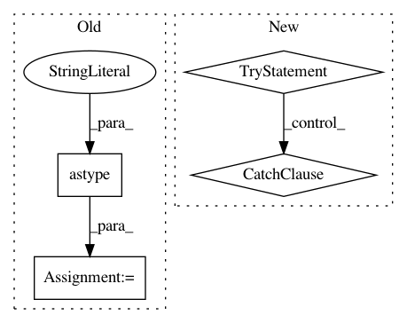

3ebeb8037e7bbb3007ddf668cb5e6512a0f70b5f,dipy/tracking/fact_tracking.py,FactTensorModel,next_step,#Any#Any#,66
Before Change
self.angel_limit = angle_limit
def next_step(vox_loc, prev_step):
vox_loc = vox_loc.astype("int")
if self.fa_vol[vox_loc] < self.fa_limit:
return False
step = self.evec1_vol[vox_loc]
angle_dot = dot(step, prev_step)
After Change
Returns the nearest neighbor tensor for location
vox_loc = location/self.voxel_size
vox_loc = tuple(int(ii) for ii in vox_loc)
try:
if self.fa_vol[vox_loc] < self.fa_limit:
return
step = self.evec1_vol[vox_loc]
except IndexError:
return
angle_dot = dot(step, prev_step)
if abs(angle_dot) < self.dot_limit:
return
if angle_dot > 0:
In pattern: SUPERPATTERN
Frequency: 3
Non-data size: 4
Instances
Project Name: nipy/dipy
Commit Name: 3ebeb8037e7bbb3007ddf668cb5e6512a0f70b5f
Time: 2011-07-27
Author: mrbago+git@gmail.com
File Name: dipy/tracking/fact_tracking.py
Class Name: FactTensorModel
Method Name: next_step
Project Name: scikit-image/scikit-image
Commit Name: 0bf6d2940a46cd414be5d738232e49602fb90826
Time: 2018-05-22
Author: lagru@mailbox.org
File Name: skimage/morphology/extrema.py
Class Name:
Method Name: local_maxima
Project Name: pymc-devs/pymc3
Commit Name: 5b2766aae94c0615aef2c8d6ac178428e6d28745
Time: 2008-07-20
Author: fonnesbeck@15d7aa0b-6f1a-0410-991a-d59f85d14984
File Name: pymc/database/mysql.py
Class Name: Trace
Method Name: tally